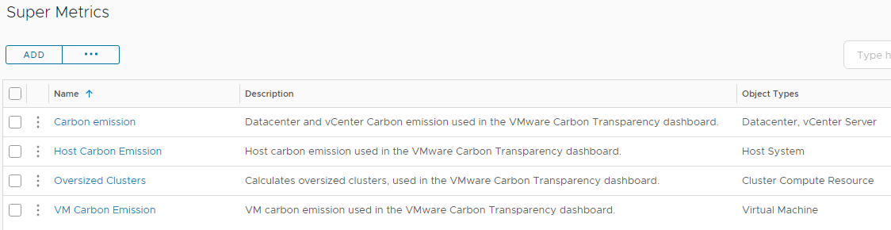
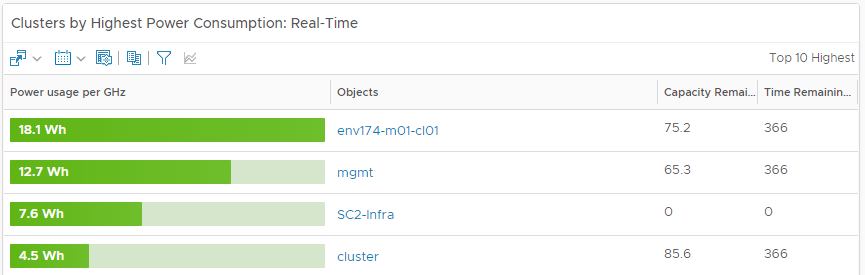
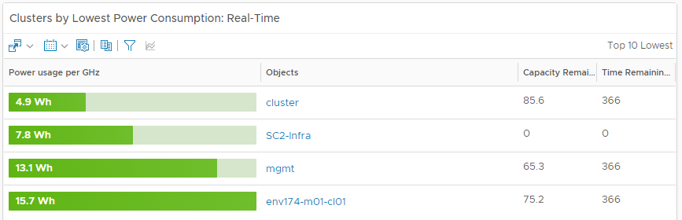

Sustainability is a top priority for companies aiming to reduce operational costs, enhance energy efficiency, and minimize carbon emissions. Virtualization technologies, such as those offered by VMware, have been pivotal in reducing carbon emissions through server consolidation. However, to achieve net-zero emissions, businesses need detailed insights into the carbon footprint of their virtual IT infrastructure.
The new Carbon Emissions Explorer Dashboard in VMware Aria Operations complements existing sustainability dashboards and offers customers powerful tools to:
- Analyze carbon emissions across virtual infrastructure levels, from vCenter to individual virtual machines.
- Identify and address outliers to reduce carbon footprint efficiently.
- Discover opportunities for right-sizing clusters and virtual machines to optimize resource usage.
Key Features of the Carbon Emissions Explorer Dashboard
The dashboard leverages built-in metrics, custom Super Metrics, and new widgets/views to provide insights into the IT infrastructure’s carbon footprint. Here’s what customers can explore:
- Trends in overall carbon emissions, helping track sustainability goals.
- Near real-time carbon emissions by datacenters.
- Weekly aggregated carbon emissions at vCenter, datacenter, cluster, host, and virtual machine levels.
- Top 10 clusters with the highest and lowest power consumption.
- Identification of oversized clusters and VMs that can be optimized to reduce carbon emissions.
Custom Super Metrics calculate carbon emissions for objects using data such as power consumption and the EPA Greenhouse Gas Equivalencies Calculator. These metrics enable precise insights into carbon emissions for objects without built-in metrics.
Dashboard Components
Super Metrics
The dashboard uses the following Super Metrics:
- Carbon Emission Super Metric: Calculates total emissions for vCenter and virtual datacenters using power consumption data.
- Host Carbon Emission Super Metric: Computes carbon emissions for individual hosts.
- Oversized Clusters Super Metric: Identifies reclaimable hosts in oversized clusters.
- VM Carbon Emission Super Metric: Measures emissions for virtual machines based on energy usage on their host systems.
Views and Widgets
The dashboard includes various views and widgets to visualize carbon emissions data. Key components include:
- Carbon Datacenter View: Displays real-time datacenter carbon emissions.
- Sustainability / Total Carbon Emissions View: Shows historical and real-time trends in emissions across the environment.
- Weekly Carbon Cluster View: Provides weekly carbon emission summaries at the cluster level, including capacity and host count.
- Weekly Carbon Host View: Highlights emissions by individual hosts, along with their specifications.
- Weekly Carbon VM View: Displays emissions for individual VMs, flagging oversized instances for optimization.
Heatmap and Real-Time Insights
The Oversized Clusters Heatmap uses color coding to identify opportunities for host reclamation:
- Green: No reclaimable hosts.
- Yellow: One reclaimable host.
- Red: Two or more reclaimable hosts.
Customers can drill down to individual clusters, hosts, and VMs to analyze their carbon footprint and optimize resource usage.
 Interactive Dashboards
The interactive dashboards allow customers to:
- Drill down from vCenter to datacenter, cluster, and individual host levels.
- View real-time and weekly carbon emissions data for clusters and VMs.
- Analyze oversized clusters and VMs to identify optimization opportunities.
Conclusion
The Carbon Emissions Explorer Dashboard in VMware Aria Operations is a game-changer for businesses aiming to reduce their IT infrastructure’s carbon footprint. By providing actionable insights and detailed metrics, this dashboard empowers companies to make data-driven decisions and achieve their sustainability goals. From tracking emissions trends to identifying optimization opportunities, the dashboard offers everything needed to move toward a greener future.